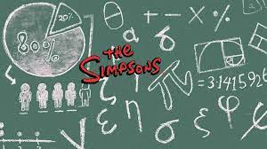

CAPITULO 3
EL ULTIMO TEOREMA DE HOMER

Homer explara sus talentos inventivos, y crea un milagroso cilindro medular, que es un cubo que encaja perfectamente
en el contorno de las vertebras humanas y promueve su invento para el dolor de espalda.
Aun que no hay la minima prueba que apoye esa afirmacion y se sienten insultados por el invento. y amenazan con destruir el invento.
Esto permitira que los que tienen problemas de espalda y promover sus propios tratamientos falsos.
Isaac Newton hizo una aparicion en los simpson, el es uno de los padres de las matematicas modernas,tambien fue inventor
David S. Cohen le interesaba escribir guiones y comics,por la comedia y los guiones supero a su amor por las matematicasy la fisica y abandono su carrera y se convirtio en un guionista de los simpson.
su unico libro que era su unica compañia era de matematicas y era el de aritmetica.
wolfskehl capitulo el ultimo treorema de fermat.
La unica esperanza que tenia flagg de salvar su alma era haciendole una pregunta al diablo que no pudiera responder, asi que pide una prueba del ultimo teorema de fermat.
despues de aceptar la derrota dice sabias que ni los mejores matematicos de otros planetas mas avansados han podido resolverlo
Una solucion casi perfecta en realidad no es una solucion.
